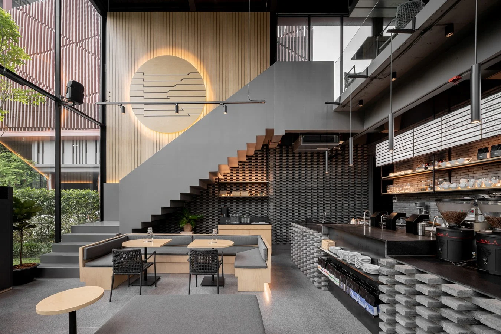

Founded in 2018, Urban Coffee Hub started with a simple dream: to create the most delightful coffee using the finestbrewed ingredients. Over the years, we have grown from a small local coffee shop into a beloved institution, known for our passion for quality and creativity.
Our founder, Akhona, started making coffee as a hobby in her home kitchen. What began as a passion project quickly turned into a thriving business as word spread about her delicious coffee. Today, we continue to uphold her commitment to excellence in every bite.
At Urban Coffe Hub, we believe in the power of coffee to bring people together. We are dedicated to creating products that not only taste amazing but also make our customers feel special. Our values include:
Our team is the heart of Urban Coffee Hub. Each member brings their unique talents and passion to the table, ensuring that every product is made with care and attention to detail.
Located in the heart of Braamfontein, our coffe shop is a warm and welcoming space where customers can enjoy freshly made goods, a cup of coffee, and a friendly atmosphere. We invite you to visit us and experience the magic of Urban Coffe Hub for yourself.
